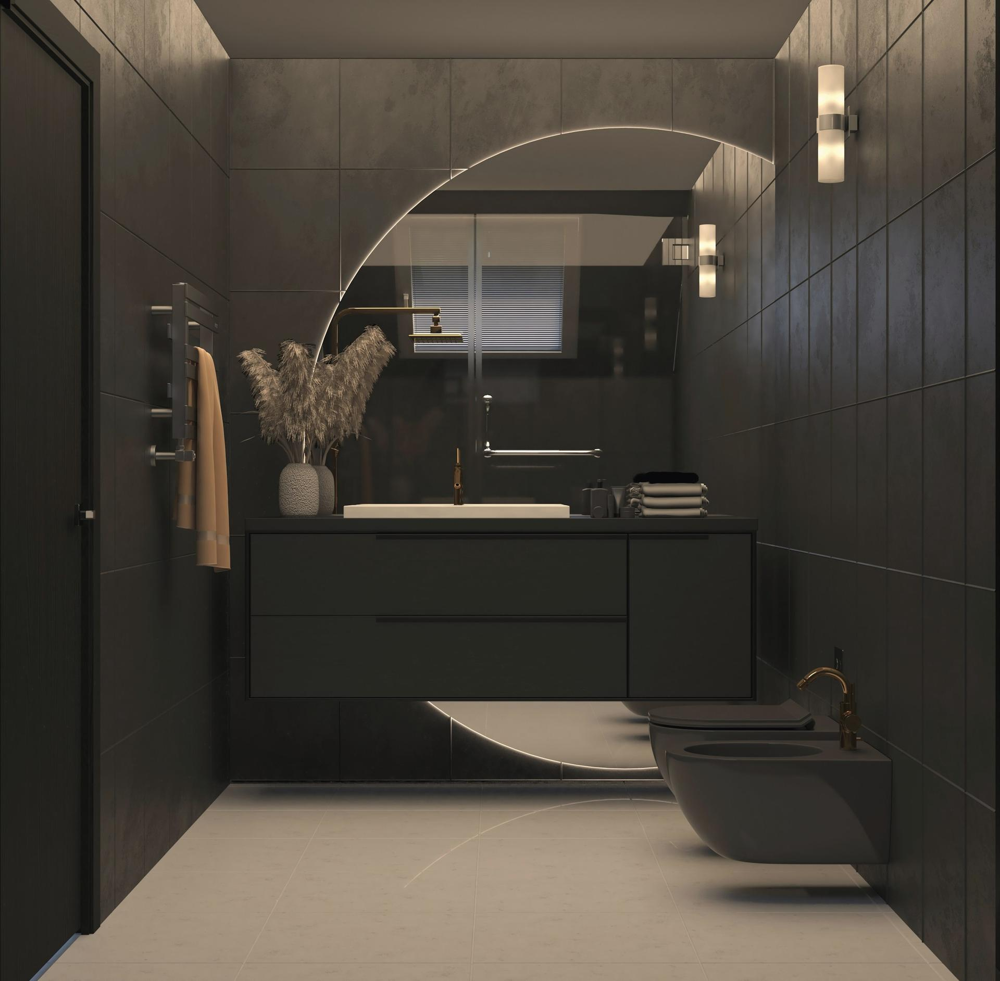
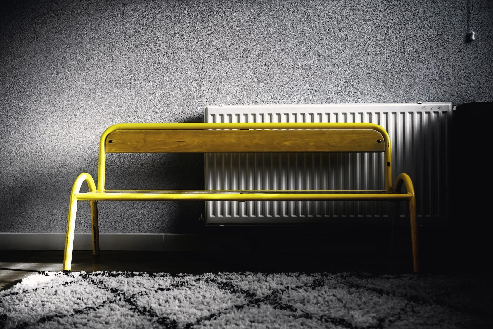
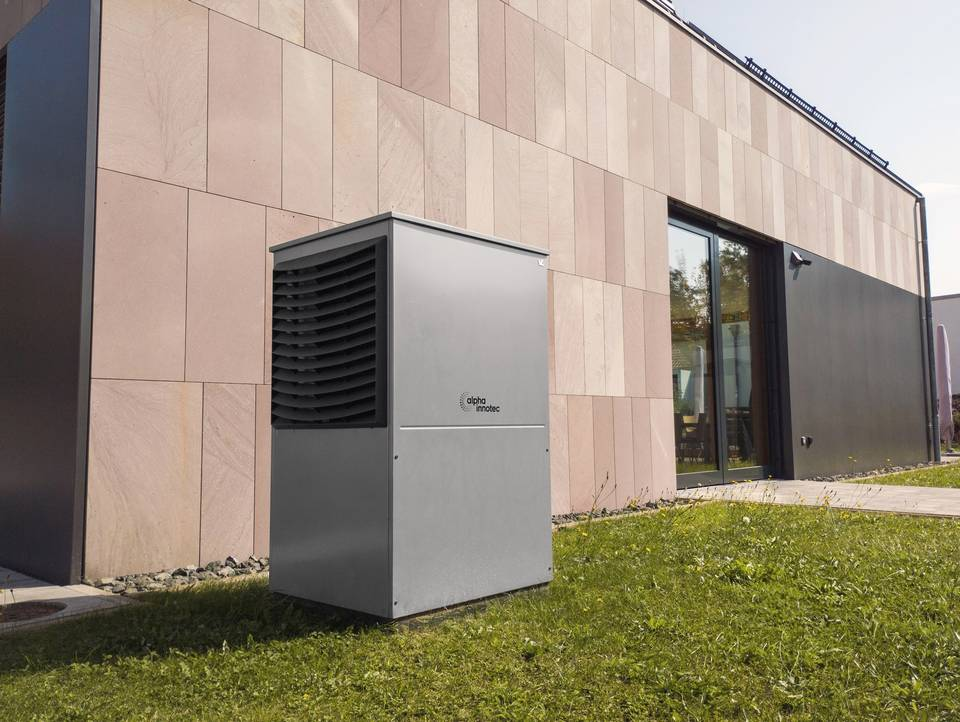
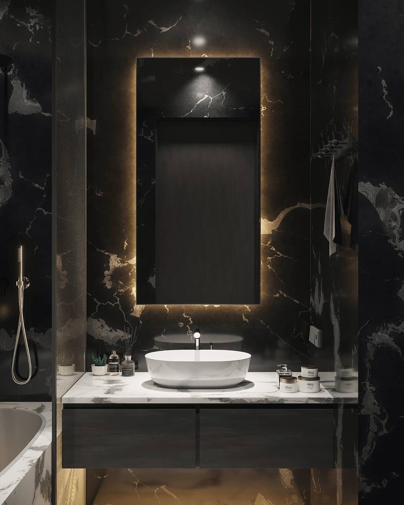
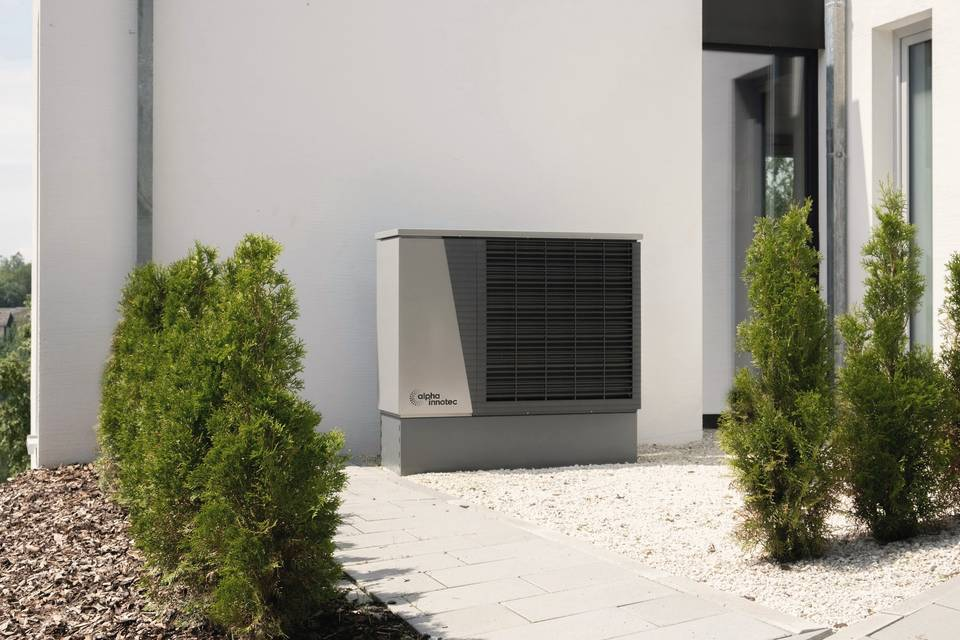
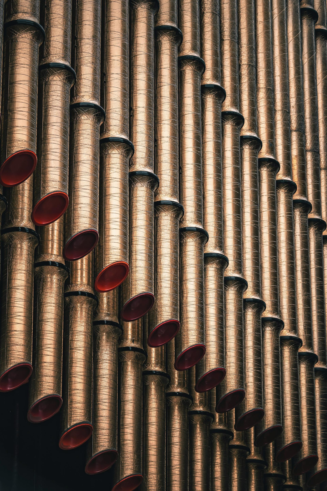

Navrhujeme, montujeme a servisujeme kúrenie, vodu a klimatizácie. Pre domy aj firmy.
Nezáväzný dopyt Čo robíme


Rozvody vody, kanalizácie a sanita od A po Z.
Vykurovacie systémy, kotly a radiátory vrátane servisu.
Návrh, montáž a servis úsporného vykurovania.
Montáž a servis klimatizácií pre byty, domy aj kancelárie.
Pravidelný servis a rýchla pomoc pri poruche.
Napíšete nám, čo potrebujete. Stačí pár viet alebo fotka.
Dohodneme termín a pozrieme sa na to priamo na mieste.
Dostanete jasnú ponuku s cenou a termínom.
Prácu urobíme poriadne a po sebe upraceme.

Napíšte, čo riešite: novú inštaláciu, výmenu kotla alebo poruchu. Ozveme sa čo najskôr.